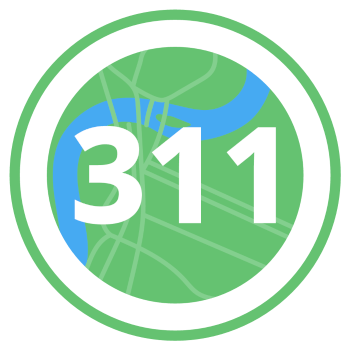

<!DOCTYPE html>
<html>
    <head>
        <title>Chattanooga Flood Map</title>
        <meta charset='utf-8' />
        <meta name='viewport' content='initial-scale=1,maximum-scale=1,user-scalable=no' />
        <script src="https://unpkg.com/maplibre-gl@^4.7.1/dist/maplibre-gl.js"></script>
        <link href="https://unpkg.com/maplibre-gl@^4.7.1/dist/maplibre-gl.css" rel="stylesheet" />
        <style>
            body {
                margin: 0;
                padding: 0;
            }
            #app {
                bottom: 0;
                left: 0;
                right: 0;
                position: absolute;
                top: 0;
            }
            #map {
                bottom: 0;
                left: 0;
                right: 0;
                position: absolute;
                top: 0;                
            }
        </style>
        <script>
            window.app = {
                config: {
                    // calls_for_service: "https://internal.chattadata.org/resource/5ts3-ay5h.json"
                    // calls_for_service: "./test-data/calls_for_service.json",
                    calls_for_service: "https://internal.chattadata.org/resource/5ts3-ay5h.json",
                    requests_to_311: "https://internal.chattadata.org/resource/k7eh-65x3.json?$query=SELECT%20service_request_key%2C%20created_date%2C%20department%2C%20request_type%2C%20description%2C%20request_type_code%2C%20status_code%2C%20intake_form%2C%20days_to_complete%2C%20sla_fy_2019%2C%20on_time_indicator%2C%20completed_at%2C%20due_at%2C%20ispublic%2C%20council_district%2C%20loc%20WHERE%20(%60request_type%60%20%3D%20'Flooding')%20AND%20((%60created_date%60%20%3E%20'2024-09-20')%20AND%20%60created_date%60%20IS%20NOT%20NULL)"
                }
            }
        </script>
    </head>
    <body>
        <div id="app">
            <div id="map"></div>
        </div>
        <script>
            function get_xy_point(item) {
                if (typeof item.loc === "object" && item.loc.type === "Point" && typeof item.loc.coordinates === "object" && item.loc.coordinates.length === 2) {
                    return item.loc.coordinates;
                } else if (typeof item.latitude === "number" && item.longitude === "number") {
                    return [item.longitude, item.latitude];
                } else if (typeof item.Latitude === "number" && item.Longitude === "number") {
                    return [item.Longitude, item.Latitude];
                }
            }
            
            var map = new maplibregl.Map({
                container: 'map', // container id
                // Define the map syle (OpenStreetMap raster tiles)
                style: "https://api.maptiler.com/maps/streets-v2-light/style.json?key=mYniYTe7rfEM5jAFdfKy",
                center: [-85.310947, 35.055666], // starting position [lng, lat]
                zoom: 11 // starting zoom
            });

            // fetch calls for service
            fetch(window.app.config.requests_to_311)
                .then(function (response) { return response.json(); })
                .then(function (items) {
                    items = items.slice(0, 100);
                    for (let i = 0; i < items.length; i++) {
                        const item = items[i];
                        const point = get_xy_point(item);  
                        console.log("point:", point);             


                        // create a DOM element for the marker
                        const el = document.createElement('div');
                        el.className = 'marker';
                        el.innerHTML = ''

                        const marker = new maplibregl.Marker( { element: el }).setLngLat(point).addTo(map);
                    }
                });


            fetch(window.app.config.calls_for_service)
                .then(function (response) { return response.json(); })
                .then(function (items) {
                    items = items.slice(0, 100);
                    console.log(items);
                    for (let i = 0; i < items.length; i++) {
                        const item = items[i];
                        const latitude = Number(item['Latitude'] || item['latitude']);
                        const longitude = Number(item['Longitude'] || item['longitude']);   
                        if (isNaN(latitude) || isNaN(longitude)) continue;                     

                        const point = [longitude, latitude];

                        // create a DOM element for the marker
                        const el = document.createElement('div');
                        el.className = 'marker';
                        el.innerHTML = ''

                        const marker = new maplibregl.Marker( { element: el }).setLngLat(point).addTo(map);
                    }
                });                
        </script>
    </body>
</html>